Configurazione RT/POS
Procedura guidata, passo per passo, per configurare il registratore telematico OMNI ONE con il dispositivo POS Q10A (Custom Pay) e farli comunicare con il protocollo 17.
La procedura si svolge in tre fasi:
| Fase | Dove | Cosa si configura |
|---|---|---|
| 1 | Registratore telematico (RT) | Parametri di rete dell'RT (menù 911 Ethernet) |
| 2 | Registratore telematico (RT) | Comunicazione con il POS (menù 917 POS), poi uscita dalla programmazione |
| 3 | POS Q10A | Rete del POS e collegamento all'RT (PAX Tools) |
Prima di iniziare
Per la comunicazione tra RT e POS occorre usare indirizzi IP STATICI, uno per il registratore di cassa e uno per il POS. Verificare che la rete locale del punto vendita sia attiva e che l'RT Omni_One siano collegati con cavo Ethernet.
Valori usati nell'esempio
Gli indirizzi qui sotto sono quelli dell'esempio mostrato nelle immagini. Nell'installazione reale vanno sostituiti con i dati della rete del cliente.
| Parametro | Valore d'esempio |
|---|---|
| DHCP | Disabilitato |
| IP del registratore di cassa (RT) | 10.15.22.210 |
| Maschera subnet | 255.255.255.0 |
| Gateway | 10.15.22.254 |
| DNS | 10.15.22.254 |
| Porta protocollo (RT) | 9100 (valore di default, da lasciare) |
| IP del POS | 10.15.22.206 |
| Porta di comunicazione POS | 8080 |
Fase 1 - Configurare la rete dell'RT (menù 911 Ethernet)
1. Accendere il registratore
Accendere l'OMNI ONE con il tasto di accensione posto sul lato sinistro del dispositivo: il display mostra l'assetto di registrazione (0,00).
2. Entrare in assetto Programmazione
Premere il tasto CHIAVE per cambiare assetto operativo. Il display mostra in sequenza gli assetti (ad esempio LETTURA) fino ad arrivare a PROGRAMMAZIONE. In questo assetto si imposta con un indirizzo IP statico l'IP del registratore telematico.
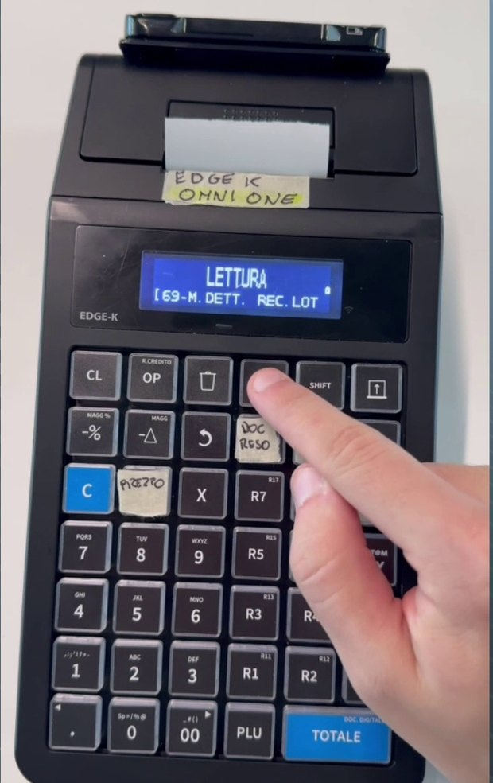
Il display mostra PROGRAMMAZIONE con la voce di menù.
3. Aprire il menù 911 e verificare il DHCP
Dal tastierino numerico digitare 911 e premere SBT (Subtotale) per entrare nel menù [911-Ethernet].
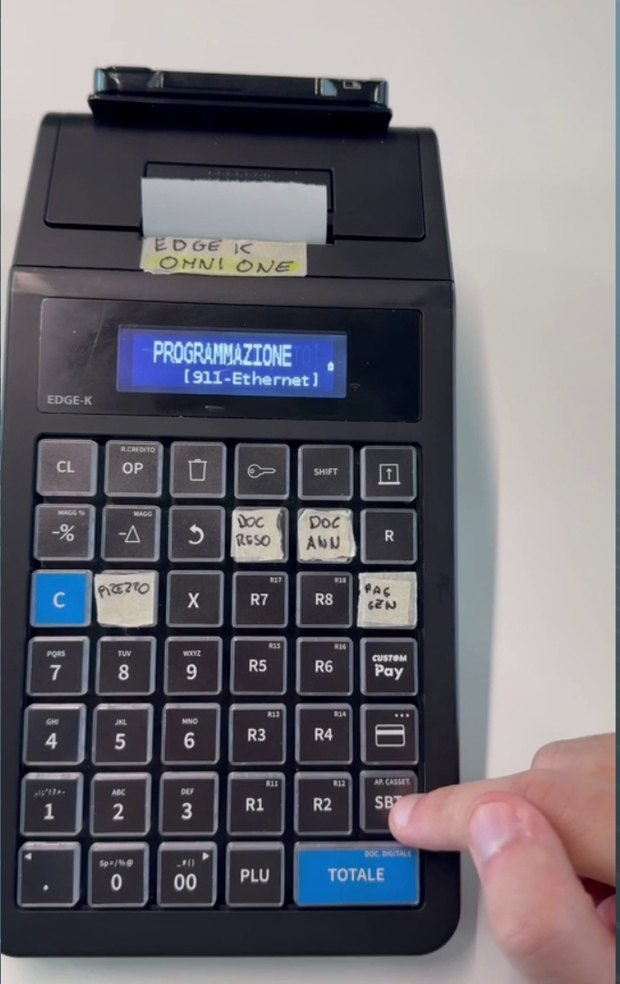
Il primo parametro è ABILITA DHCP: deve essere [DISABILITATO].
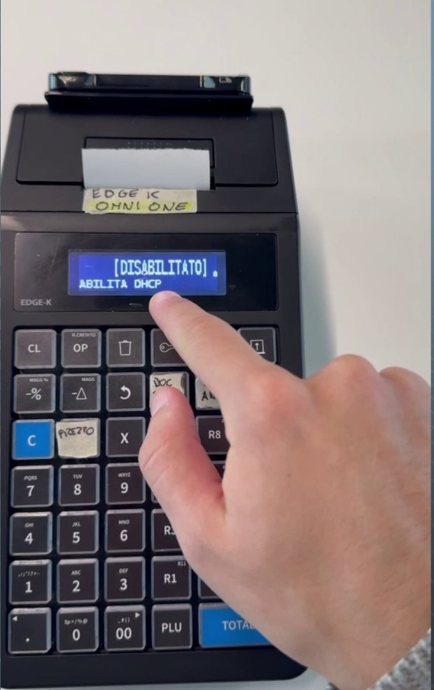
4. Indirizzo IP del registratore
Premere SBT per passare al parametro successivo. Alla voce INDIRIZZO IP impostare l'indirizzo IP statico del registratore telematico (es. 10.15.22.210), scrivendolo dal tastierino numerico, e confermare con SBT.
5. Maschera subnet
Alla voce MASCHERA SUBNET controllare o digitare la maschera di rete (es. 255.255.255.0) e confermare con SBT.
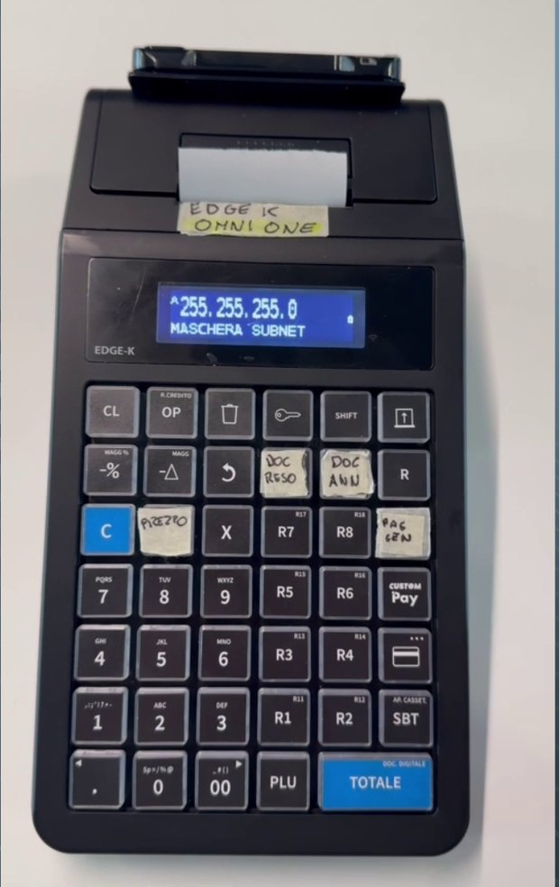
6. Gateway
Alla voce GATEWAY impostare il gateway della rete (es. 10.15.22.254), sempre dal tastierino numerico, e confermare con SBT.
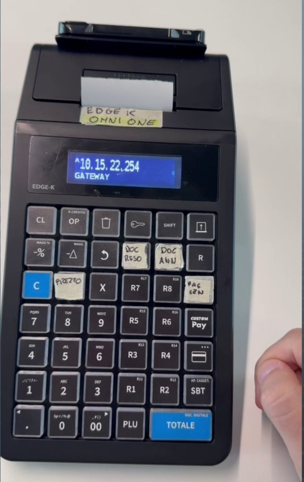
7. DNS
Alla voce DNS impostare l'indirizzo del DNS (es. 10.15.22.254), dal tastierino numerico, e confermare con SBT.
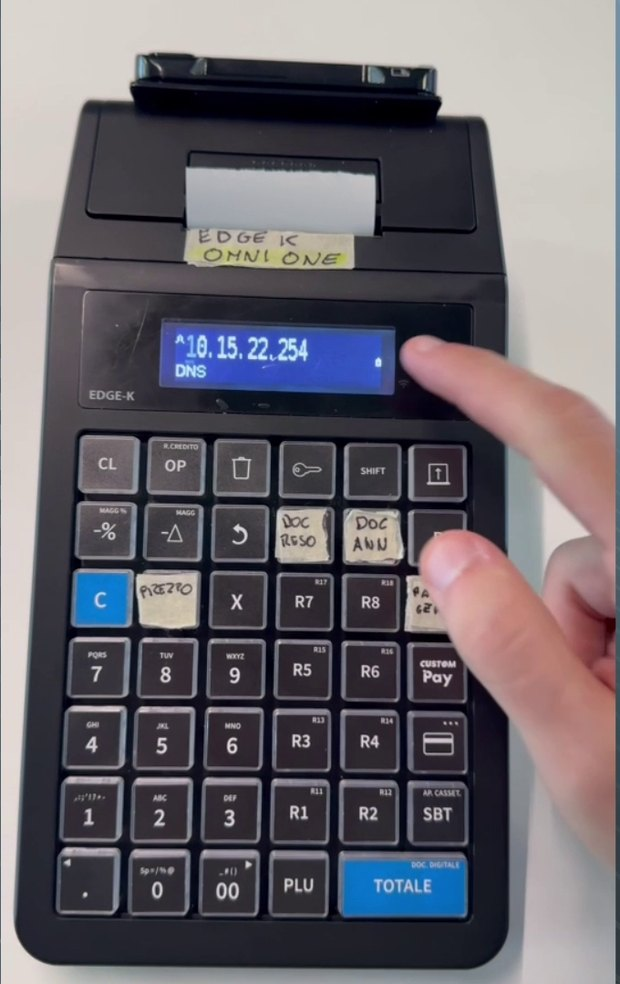
8. Porta protocollo
Alla voce PORTA PROTOCOLLO lasciare il valore di default (9100) e confermare con SBT.
9. MAC ID
Il MAC ID viene scritto in automatico: non c'è nulla da digitare. Premere SBT per concludere.
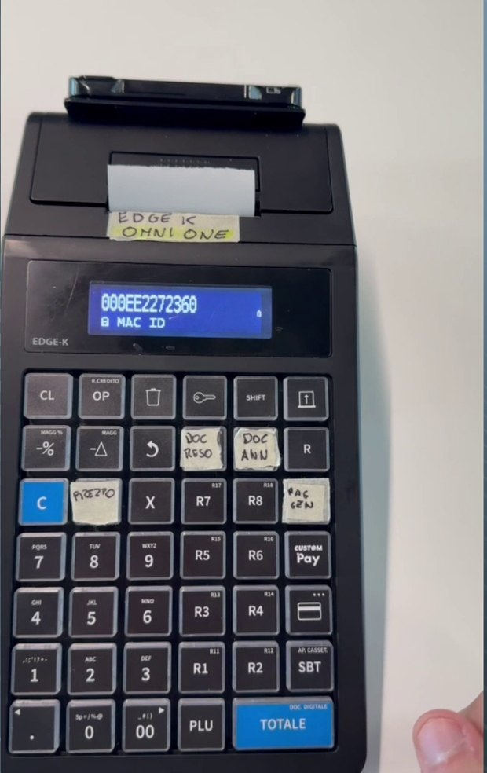
10. Controllare il documento gestionale
Al termine l'RT stampa un documento gestionale (resoconto) con i parametri di rete del registratore. Controllare che i valori corrispondano a quelli voluti.
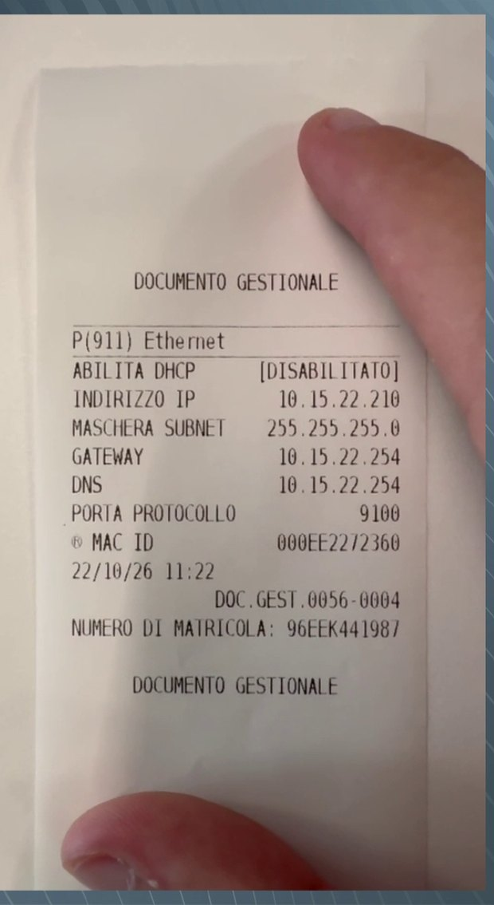
Nota
Il documento riporta DHCP [DISABILITATO], indirizzo IP, maschera subnet, gateway, DNS, porta protocollo e MAC ID. Conservare l'indirizzo IP dell'RT: servirà nella Fase 3.
Fase 2 - Configurare la comunicazione con il POS (menù 917 POS)
11. Selezionare il menù 917 POS
Dopo la stampa il display torna su PROGRAMMAZIONE. Dal tastierino numerico digitare 917 e premere SBT per entrare nel menù [917-POS].
12. Abilitare la connessione Ethernet
La voce CONNESSIONE ETH deve essere [ABILITATO]. Se non lo è, premere il tasto 00 per spostarsi tra le due opzioni del menù (abilitato/disabilitato), quindi confermare con SBT.
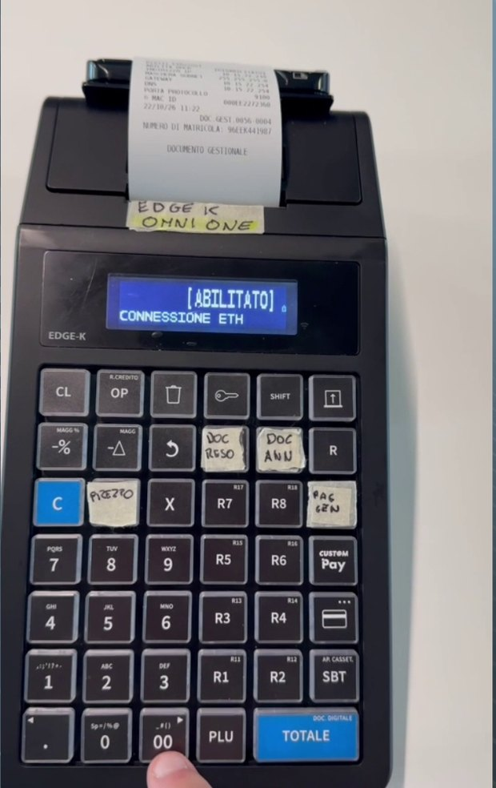
13. Indirizzo IP del POS
Alla voce INDIRIZZO IP impostare l'indirizzo IP del dispositivo POS (es. 10.15.22.206), scrivendolo dal tastierino numerico, e confermare con SBT.
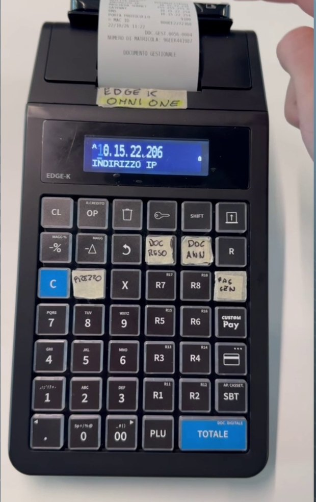
Attenzione
In questo menù l'indirizzo da inserire è quello del POS, non quello del registratore. È un IP statico che andrà configurato anche sul dispositivo POS nella Fase 3.
14. Porta di comunicazione
Alla voce PORTA [1-65535] digitare la porta di comunicazione (8080) e confermare con SBT.
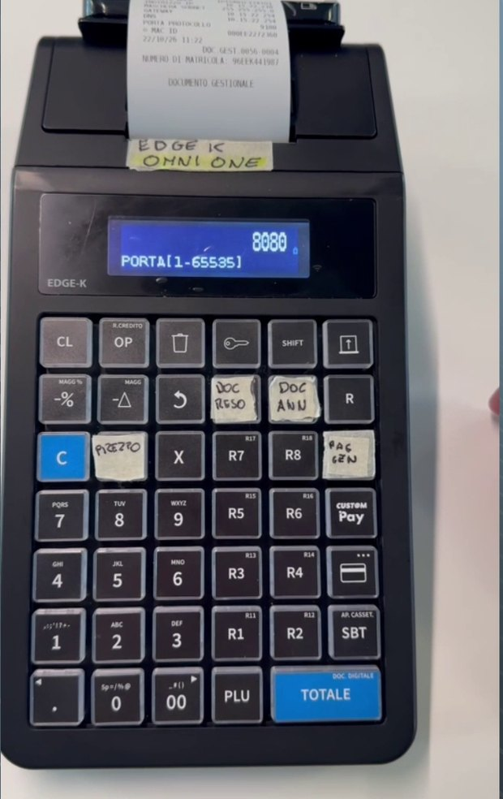
15. Scontrino su POS
La voce SCONTRINO SU POS deve essere [DISABILITATO]. Confermare con SBT.
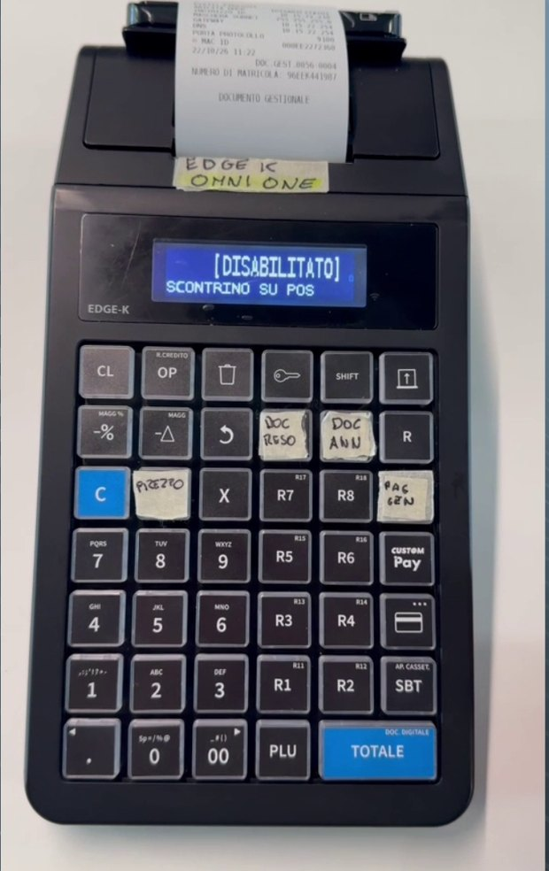
16. Controllare il documento gestionale
L'RT stampa il documento P(917) POS con connessione ETH abilitata, indirizzo IP e porta del POS e scontrino su POS disabilitato. Verificare i valori: l'IP del POS servirà nella Fase 3.
17. Uscire dalla programmazione
Premere due volte il tasto CHIAVE per uscire dalla programmazione e tornare in assetto di registrazione (display 0,00).
Fase 3 - Configurare il POS Q10A
18. Accedere al POS
Spostarsi sul dispositivo POS. Sul display compare la schermata iniziale di Custom Pay con l'importo 0,00. Eseguire un doppio tap nell'angolo in alto a sinistra del display.
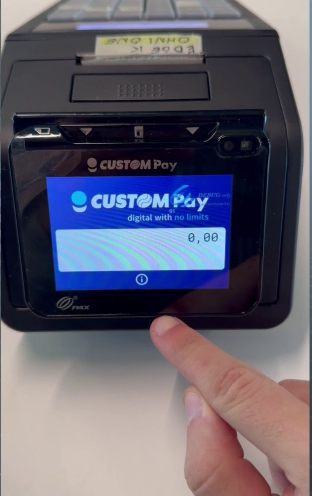
19. Inserire la password dinamica
Viene visualizzata la schermata Inserisci la password.
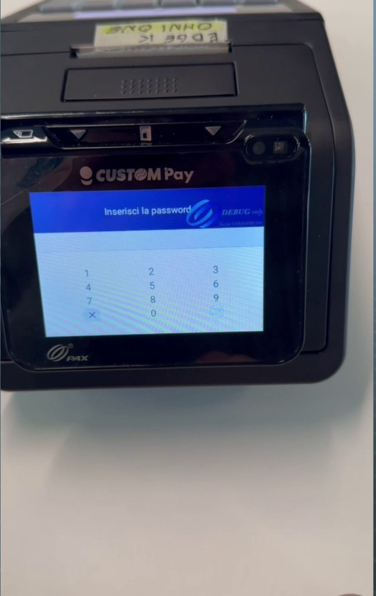
La password è dinamica e si compone nel formato mm1gg7: mm = mese corrente, 1, gg = giorno odierno, 7. Esempio: il 22 ottobre la password è 101227. Digitarla con la tastiera numerica e confermare con OK.
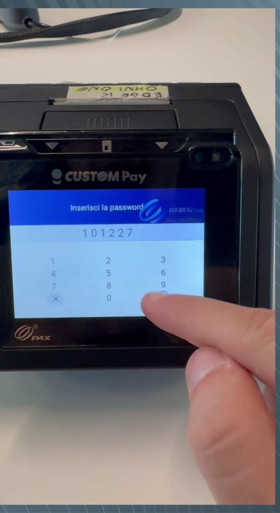
20. Impostare la rete Ethernet del POS
Aprire le IMPOSTAZIONI: qui la password è fissa, tramite tastiera numerica inserire la seguente password: pax9876@@ (vedere il paragrafo 2.3 del manuale). Selezionare Rete e Internet.
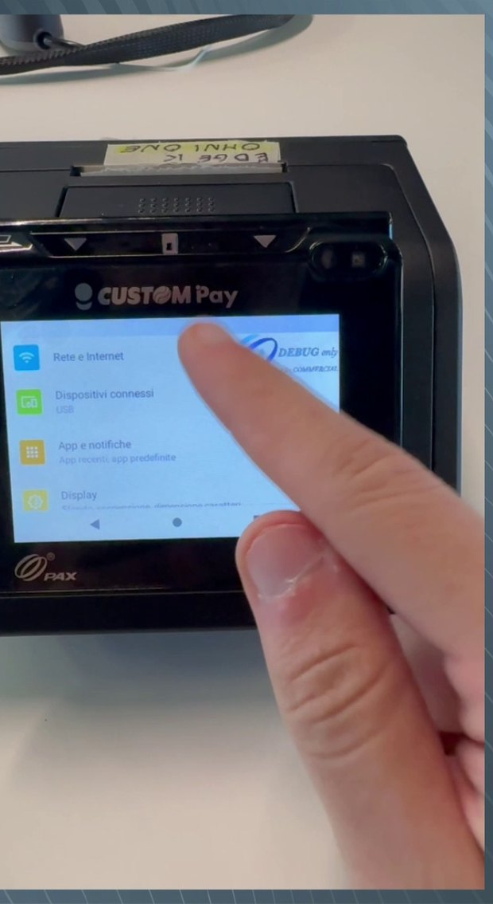
Selezionare la voce Ethernet: la modalità deve essere Static IP.
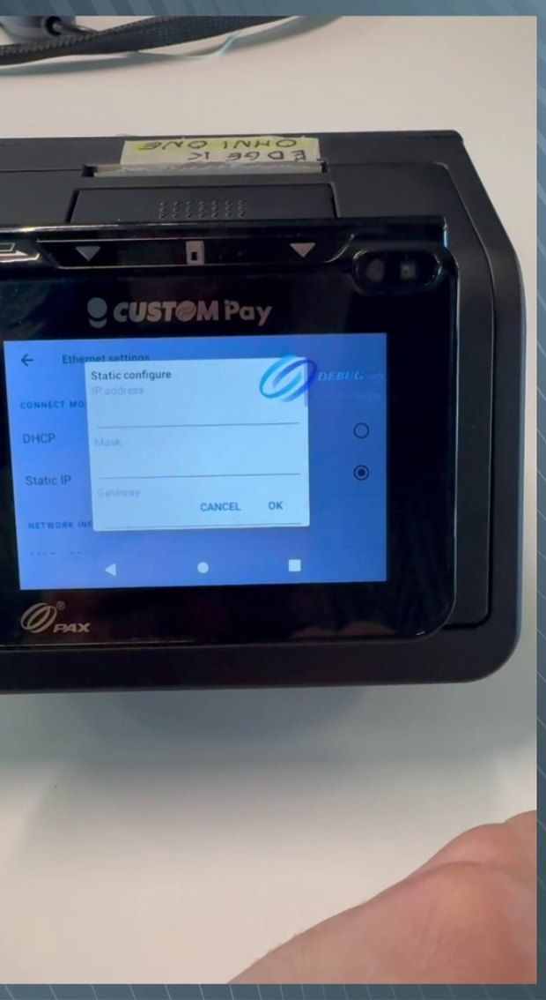
Nella finestra Static configure inserire l'indirizzo IP già impostato sulla parte fiscale nel menù 917 (nell'esempio 10.15.22.206), insieme agli altri parametri di rete (maschera subnet, gateway, DNS), e confermare con OK.
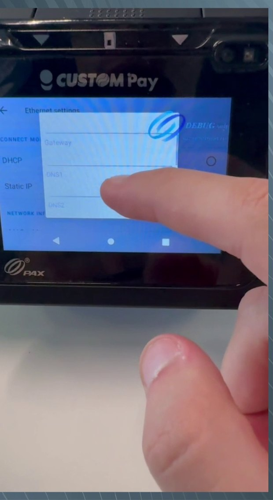
Se i parametri sono già stati impostati in precedenza, non serve ripetere l'operazione: nella schermata Ethernet settings si vedono i campi già compilati.
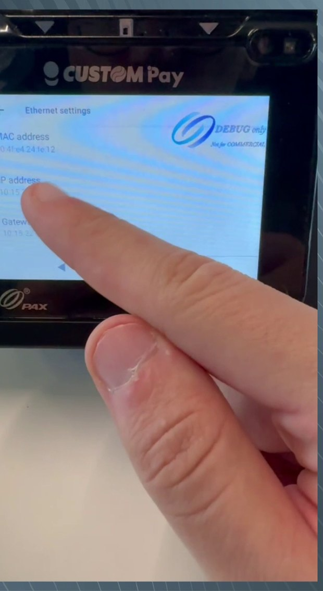
21. Aprire PAX Tools
Premere il pulsante centrale (tondo) per tornare al menù principale e aprire Applicazioni, poi PAX Tools.
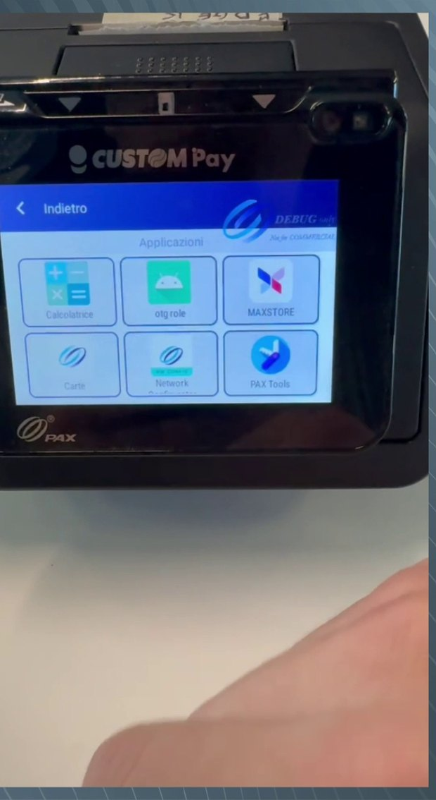
Inserire la password installatore, sempre uguale (vedere il capitolo 5 del manuale), e confermare con OK.
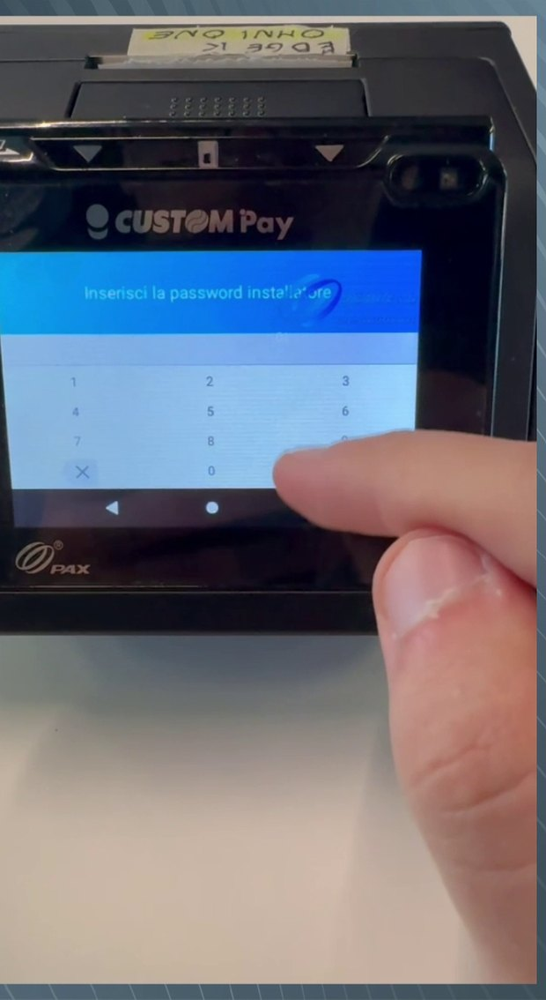
22. Configurare l'ECR (protocollo 17)
Premere CONFIGURA ECR e selezionare ECR 17. Sono presenti anche le ALTRE OPZIONI.
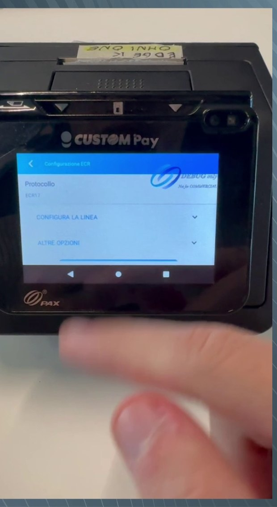
Aprire CONFIGURA LA LINEA e controllare i parametri:
- Tipo di linea: TCP
- Porta terminale:
8080 - IP terminale: viene compilato automaticamente dal dispositivo POS
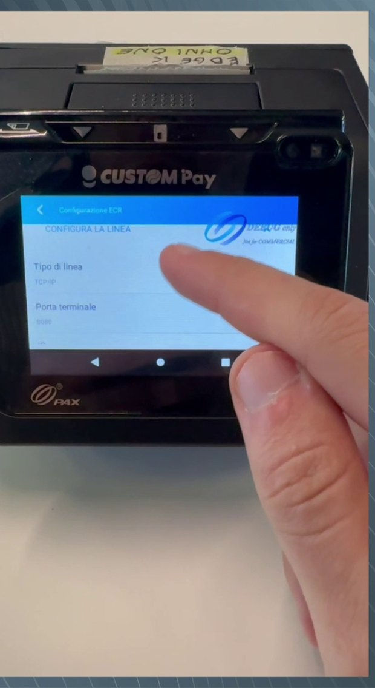
23. Inserire l'IP del registratore
Premere IP cassa e digitare l'indirizzo IP della parte fiscale impostato nel menù 911 (nell'esempio 10.15.22.210). Confermare con OK (o FINE) e tornare indietro con il pulsante tondo.
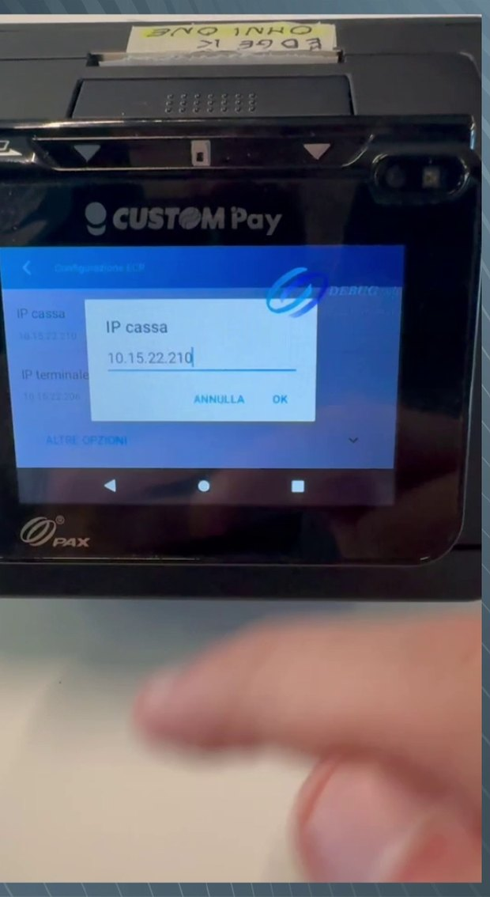
Dove trovare l'IP
L'indirizzo dell'RT è riportato nel documento gestionale P(911) Ethernet stampato nella Fase 1.
24. Verifica finale
Quando il display del POS mostra la stessa dicitura che appare sul display operatore del registratore (OMNI ONE), RT e POS sono configurati correttamente.
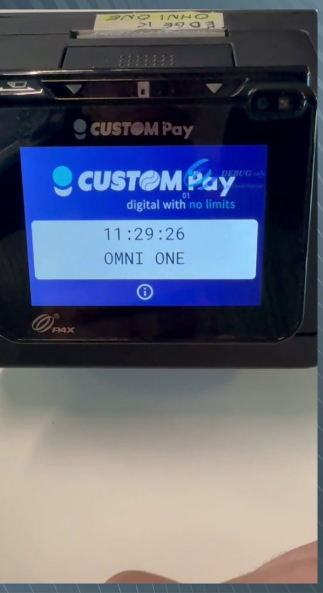
Riepilogo dei collegamenti
| Dove | Parametro | Valore |
|---|---|---|
| RT - menù 911 | Indirizzo IP | IP del registratore |
| RT - menù 917 | Indirizzo IP | IP del POS |
| POS - Static IP | IP address | IP del POS (lo stesso del menù 917) |
| POS - PAX Tools | IP cassa | IP del registratore (lo stesso del menù 911) |